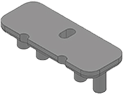
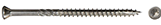
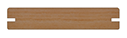
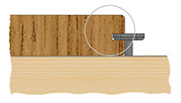
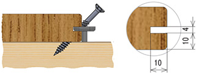
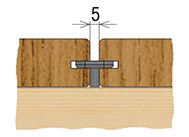

Terra
Крепеж Terra предназначен для монтажа террасной и палубной доски, имеющей на двух боковых поверхностях специальный паз. Паз может быть сквозным или локальным. Сквозной паз выполняется на заводе при изготовлении доски. Локальный паз выполняется непосредственно в процессе монтажа ламельным фрезером.
Способ монтажа уличной напольной доски с пазом на крепеж типа Terra надежен, универсален, доступен и быстр.Terra – это уникальное сочетание надежности, универсальности и скорости.
Terra - вид крепежа, который может быть использован для монтажа импрегнированной террасной и палубной доски.Terra может быть использован повторно. Инструкцию по монтажу террасной доски с помощью крепежа Terra можно найти тут.
| Два варианта комплектации | |||
|---|---|---|---|
Terra-1Для доски шириной 90-120 мм Саморез желтый цинк 3,5 х 55 мм |
 | ||
Terra-2Для доски шириной 90-140 мм Саморез нержавеющая сталь 4006 4,0 х 60 мм |
 | ||
Конструктивные особенности Terra
- Выполнен из композиционного УФ стойкого материала,
- Не конденсирует влагу,
- Комплектуется саморезом,
- Снабжен компенсаторами разбухания древесины,
- За счет фасок по контуру без усилий устанавливается в паз доски,
- Ассиметричное положение отверстия обеспечивает большой захват доски саморезом
Рекомендации по выбору древесины
| Характеристика | Обшивка | Несущая конструкция |
|---|---|---|
| Толщина, мм | 20 - 40 | от 40 |
| Ширина, мм | 90 - 140 | от 45 |
| Плотность | до 900* | без ограничений |
| Монтажный зазор | 5** | 500 |
| Профиль обшивки |
|---|
|

планкен прямой, террасная доска, палубная доска |
Расход крепежа ГвозDECK TERRA на 1 м2
| Ширина террасной доски, мм | Расстояние по осям лаг, мм |
Норма расхода, шт./кв.м |
|---|---|---|
| 90 | 500 | 21 |
| 120 | 500 | 16 |
| 140 | 500 | 14 |
Цены на крепеж Гвозdeck Terra
| Наименование | Ед. изм. | Кол-во в упаковке | Цена, руб/шт. | |||||
|---|---|---|---|---|---|---|---|---|
| индивид. | групп. | 0 - 500 | 501 - 1500 | 1501 - 5000 | 5001 - 10000 | более 10000 | ||
| Терра-1 (клипса + саморез 3,5*55 желтый цинк) |
к-т | 100 | 800 | 14,00 | 13,50 | 13,00 | 12,50 | 11,50 |
| Терра-2 (клипса + саморез 4,0*60 нержав. сталь 4006) |
к-т | 100 | 800 | 22,00 | 21,50 | 21,00 | 20,50 | 19,50 |
Способ монтажа крепежа Гвозdeck Terra
| Быстрый простой монтаж | |
|---|---|
Шаг 1Установить крепеж  |
Шаг 2Закрутить саморез  |
| Универсальный монтажный зазор 5 мм |
|---|
|  |